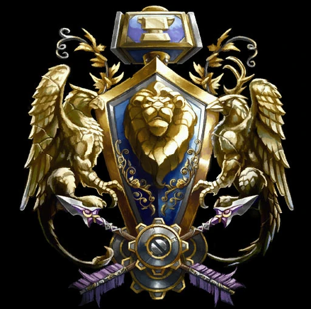
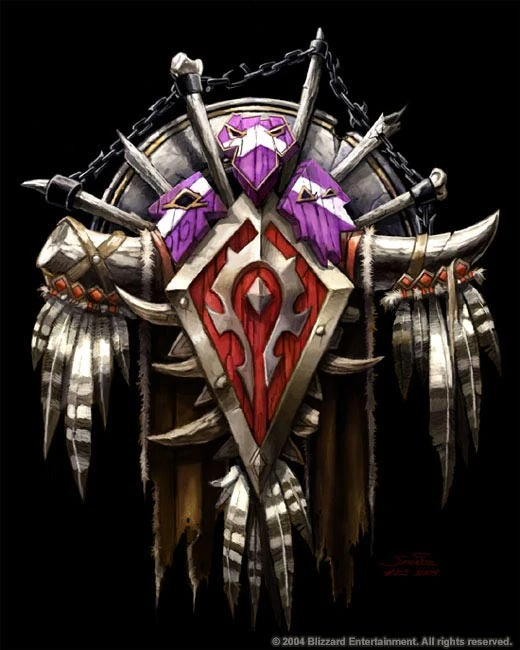
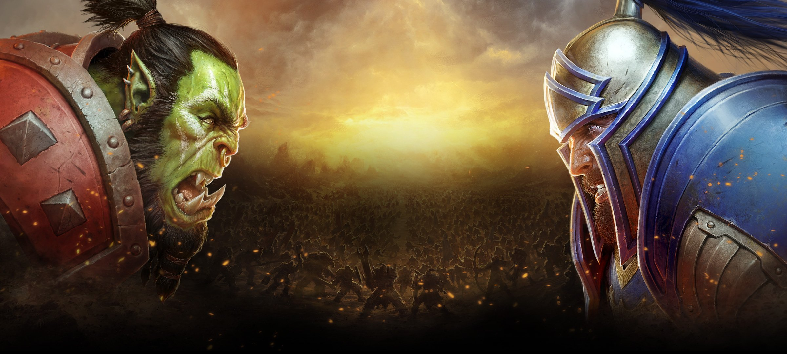
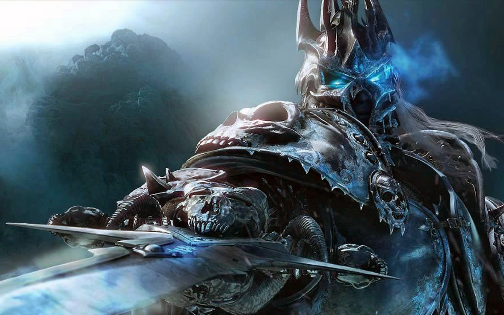

World of Warcraft — багатокористувацька рольова онлайн-гра, розроблена компанією Blizzard Entertainment. Це четверта відеогра в серії Warcraft, не враховуючи доповнень та відхиленої Warcraft Adventures: Lord of the Clans. Події ігор серії Warcraft відбуваються у фентезійному всесвіті Warcraft, що вперше був зображений у грі Warcraft: Orcs & Humans в 1994 році. Події World of Warcraft відбуваються через п'ять років після фіналу Warcraft III: The Frozen Throne
Згідно з книгою рекордів Гіннесса, World of Warcraft є найпопулярнішою MMORPG в світі. В прес-релізі Blizzard від 23 січня 2007 року повідомлялося, що кількість передплатників гри склала більше 8 млн. осіб по всьому світу, станом на 7 жовтня 2010 року кількість передплатників перевищила вже 12 млн. World of Warcraft таким чином є найбільш популярною MMORPG в світі, і тримає місце в Книзі рекордів Гіннеса як найпопулярніша MMORPG за кількістю передплатників. Станом на липень 2012 року, Гра зібрала понад 10 млрд. доларів США, що робить World of Warcraft також найбільш касовою відеогрою всіх часів, обійшовши дохід від Call of Duty: Black Ops на 1,5 мільярди доларів. У січні 2014 було оголошено, що протягом всієї роботи гри створено понад 100 млн. акаунтів
WoW періодично отримує доповнення, які вносять зміни до ігрового процесу та розширюють ігровий світ. Першим з них стало World of Warcraft: The Burning Crusade, випущене 16 січня 2007 року. На 2023 рік останнім є World of Warcraft: Dragonflight, вихід якого відбувся 28 листопада 2023 року.
Зміст
Основи
На відміну від попередніх ігор серії Warcraft, ця гра не є стратегією в реальному часі, а багатокористувацькою онлайн-грою. World of Warcraft дозволяє гравцеві зануритися у світ Warcraft, взявши роль обраного персонажа. Цілі гри кожен визначає для себе сам. Це може бути дослідження світу, вдосконалення майстерності у якійсь професії, чемпіонство на арені або просто досягнення максимально доступного рівня розвитку персонажа. З отриманням останнього рівня гра не закінчується. Керуючи ігровим персонажем, він може досліджувати різноманітні території, боротися з чудовиськами, а також виконувати різні доручення, які видають комп'ютерні персонажі. При створенні нового персонажа гравець може вибрати з-поміж тринадцяти рас і одинадцяти класів, які визначають доступні характеристики і вміння. Для всіх них можливі поєдинки і з іншими гравцями, на дуелях, аренах або проти гравців ворожої фракції. За успішне виконання завдань гравець отримує гроші, різні речі та досвід. За битву з іншими персонажами — «честь», бали, які можна вкласти в спорядження. Більшість завдань на початковому етапі виконуються наодинці, але чим вище гравець розвивається і зростає за рівнями, тим завдання стають складнішими, і частину з них відразу розраховано на те, щоб персонажі об'єднувалися в групи. Існують також спеціальні підземелля, або «інстанси», котрі розраховані для груп від п'яти до сорока гравців. Для координації дій таких великих груп гравці можуть об'єднуватися в гільдії. Гравець може спіймати і приручити істот-вихованців, з яким брати участь у боях вихованців. За перемогу персонаж отримує нагороди і щоденні додаткові завдання. Самі вихованці з часом стають ефективнішими і набувають нових якостей[4]. Компанія Blizzard постійно розробляє нові можливості для високорівневих гравців. Наприклад, для того, щоб зібрати собі гідну екіпіровку, можна виконувати завдання фракцій, чим поступово змінювати їх ставлення до себе на більш прихильне. Для цього в грі створена ціла система «репутації», яка полягає в тому, що якщо гравець виконує завдання будь-якої конкретної раси або навіть фракції, — ставлення «працедавця» до гравця змінюється в кращий бік. Гравці з високою репутацією в якійсь з фракцій чи рас отримують унікальні бонуси, такі як їздові тварини інших рас, високорівневі рецепти, броню і зброю у торговців. Гравців з низькою репутацією представники фракції будуть ігнорувати або атакувати, щойно побачать[5]. У грі існують професії, які персонажі можуть розвивати для подальшого отримання предметів, що потім можна використовувати в процесі гри. В загальному вони поділяються на добувні та виробничі. Вивчати і розвивати професії можна у тренерів та за допомогою спеціальних рецептів. Професіями можна оволодіти незалежно від раси і класу. Ігрові персонажі в «World of Warcraft» прив'язані до конкретних профілів (акаунтів). Гравці можуть створювати до 10 персонажів на одному сервері, із загальним лімітом в 50 персонажів для всіх серверів
Раси і класи
Всі ігрові раси розбиті на дві ворожі фракції — Альянс і Орду. Расам доступні наступні класи, що визначає їхні характеристики та здібності: Воїн, Паладин, Мисливець, Розбійник, Жрець, Лицар Смерті, Шаман, Маг, Чорнокнижник, Монах, Друїд, Мисливець на демонів. Кожен клас відкритий для певних рас, наприклад, Друїдом може бути лише представник Нічних ельфів, ворґенів, тауренів і тролів.
Alliance
Люди — нащадки врайкулів, раси велетнів, створених Титанами. Колись їхня єдина держава Аратор розкололася, а її фрагменти постраждали від орків та невмерлих. Коли Палаючий Легіон завдав удару, люди вступили в союз з іншими расами, проте зазнали значних втрат, а їхній король Артас став повелителем невмерлих. Хоча люди вважаються однією з наймолодших рас Азероту, вони славляться доблестю, відвагою та швидким пристосуванням до змін. Лідер на час подій гри — король Андуїн Рінн.
Нічні ельфи — близькі до природи та раніше безсмертні усамітнені істоти, що активно проявили себе під час нападу Палаючого Легіону. Подолавши Легіон втратою Дерева Життя, Нічні ельфи стали вразливими до старіння і хвороб. Проте з часом було вирішено виростити нове Дерево Життя, яке замість повернення безсмертя стало ширити хвороби. Орді вдалося захопити частину володінь ельфів, проте вони готуються до відбиття загрози, в той час, як Азерот розпадається на частини. Лідери — Верховна жриця Тіранда Шелест Вітру і верховний друїд Малфуріон Лютошторм.
Дворфи — низькорослий народ, нащадки земельників — істот з каменю, створених Титанами, але які врешті стали створіннями з плоті й крові через магічну епідемію. Дворфи намагаються відкрити таємниці свого минулого, ведучи розкопки в древніх містах Азероту. Лідери — Рада Трьох Молотів.
Гноми — низькорослі славетні механіки, інженери і техніки, котрі походять від механогномів, що їх колись створили собі на допомогу Титани. В ході навали Палаючого Легіону втратили столицю Гномреґан та прагнуть відвоювати свої землі. Лідер — головний механік Гелбін Меґґабур.
Horde
- ...
Орки — кремезні прибульці зі світу Дренор, обернені на жорстоких варварів Палаючим Легіоном для знищення дренеїв. Відтоді їхня коричнева шкіра позеленіла, а ціллю життя стала війна. Їхнє вторгнення в Азерот завершилося невдачею та рабством у людей. Залишки орків осіли в землях Калімдору і врешті з'єдналися з рештою орків Дренору, щоби подолати рабство Палаючого Легіону. Однак їхній новий лідер, Ґаррош Пеклокрик, виявився більш імпульсивним за свого попередника Тралла, тому до кінця подій World of Warcraft: Mists of Pandaria продовжував агресію не тільки проти Альянсу, а й проти інших рас Орди. Наразі лідером орків є Варок Завроклик.
Таурени — напівлюди, напівбики, жителі Калімдору, котрі уклали союз із орками заради виживання. Попри втрати у війні з Палаючим Легіоном, а потім сварки з орками, таурени лишаються вірними Орді. Лідер — верховний вождь Бейн Криваве Копито.
Гобліни — колишні раби тролів, які скинули їхню владу та заснували власну цивілізацію. Від природи хитрі та жадібні, гобліни виробляють і поставляють зброю як Альянсу, так і Орді. Лідер — торговий принц Ґаллівікс.
Ельфи крові — вцілілі колишні вищі ельфи, які страждають через втрату сили Сонячного джерела, опогонаненого Артасом Менетілом. Їхній лідер Кель'тас Сонячний Блукач у пошуках порятунку пішов на бік Палаючого Легіону і опанував магію скверни. Хоч Сонячне джерело було очищене пророком дренеїв Веленом, деякі ельфи і надалі вірні темній магії. Лідер — Лор'темар Терон, лорд-регент Кель'Таласа.
Тролі — жорстокі і схильні то темної магії істоти. Серед них виділяється горде, проте вимираюче плем'я Чорного списа, яке живе окремо від решти свого народу. Свого часу воно допомогло оркам Тралла в боротьбі проти людей, за що було прийняте до Орди, хоч з приходом до влади Ґарроша вплив тролів похитнувся. Після смерті Вол'джина лідером є Рохан.
Невмерлі — колишні слуги Короля Лича Артаса, які зуміли втекти з-під його влади на чолі з ельфійкою Сильваною Вітрогін. Шукаючи союзників через страх багатьох народів Азероту перед невмерлими, вони уклали союз з Ордою. Лідер — вождь Орди, королева банші Сильвана Вітрогін.
Розробка
World of Warcraft було анонсовано Blizzard на конференції European Computer Trade Show 2 вересня 2001 року. Було повідомлено про світ гри, її основні особливості, ігрові раси й класи. Майк Морхейм, президент та співзасновник Blizzard, повідомив, що World of Warcraft на той час була їхнім основним проектом[11]. Інтерфейс розроблявся таким, щоб гравці могли змінювати його на свій розсуд та дописувати власні міні-доповнення, які полегшують користування ним
На початку 2004 року почалося бета-тестування, а 23 листопада гра вийшла у Північній Америці, Австралії та Новій Зеландії. Початково з територій були доступними тільки Східні Королівства та Калімдор, а Альянс і Орда включали по чотири раси. 18 січня 2005 року World of Warcraft випустили в Південній Кореї, а 11 лютого в Європі. Поступово гра вдосконалювалася патчами, що вносили зміни в ігровий баланс і додавали нові можливості.
Анонс першого доповнення відбувся 28-29 жовтня на BlizzCon. Доповнення отримало назву Burning Crusade, а 11 вересня 2006 стало відома точна дата його виходу — 16 січня 2007 року
Сюжет
Після подій Warcraft III: The Frozen Throne нова Орда Тралла розширилася, прийнявши невмерлих відречених, тауренів і тролів. Тим часом гноми, дворфи та нічні ельфи вступили до відродженого Альянсу, керованого з людського королівства Штормград. Коли король Штормграду, Варіан Рінн, таємним чином зник, лорд Болвар Фордраґон став регентом. Герої Альянсу та Орди беруться розкрити змову, яка загрожує Азероту, та вирішити інші загрози.
 Нагороди
- Гра року (Gamespot, Macworld, XSages, Fragland, Cinescape, Gaming Illustrated)
- Найкраща багатокористувацька онлайн-гра (GameSpot)
- Найкраща RPG для ПК (FileFront)
- Переможець конкурсу Best of Show (E3 2003)
- Найкращий вступний відеоролик (Game Chronicles)
- Лауреат конкурсу Best Graphics (найкраща графіка) (E3 2003)